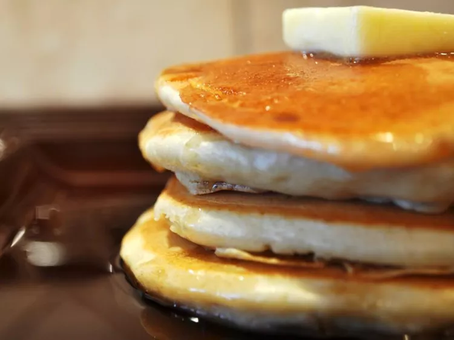

Fluffy Pancakes

Description
Picture it: a golden, fluffy stack of homemade pancakes, lightly crisped around the edges and tender through the center. This surprisingly quick and easy recipe has been our most popular for years—and with good reason. These simple from-scratch pancakes use ingredients you likely have on hand—like all-purpose flour, baking powder, sugar, butter, and egg—and it tastes so much better than boxed mix versions.
The secret to the fluffiest pancakes? Air! The combination of homemade buttermilk (milk and vinegar) and two leaveners (baking powder and baking soda) create lots of air bubbles in the pancake batter, resulting in the lightest and fluffiest pancakes imaginable.
Ingredients
- 3/4 cup milk
- 2 tablespoon white vinegar
- 1 cup all-purpose flour
- 2 tablespoons white sugar
- 1 teaspoon baking powder
- 1/2 teaspoon baking soda
- 1/2 teaspoon salt
- 1 egg
- cooking spray
- 2 tablespoons butter, melted
Steps
- Preheat oven to 200 degrees. Have a baking sheet or heatproof platter ready to keep cooked pancakes warm in the oven.
- In a small bowl, whisk together flour, sugar, baking powder, and salt; set aside.
- In a medium bowl, whisk together milk, butter (or oil), and egg.
- Add dry ingredients to milk mixture; whisk until just moistened. (Do not overmix; a few small lumps are fine.)
- Heat a large skillet (nonstick or cast-iron) or griddle over medium. Fold a sheet of paper towel in half, and moisten with oil; carefully rub skillet with oiled paper towel.
- For each pancake, spoon 2 to 3 tablespoons of batter onto skillet, using the back of the spoon to spread batter into a round (you should be able to fit 2 to 3 in a large skillet).
- Cook until surface of pancakes have some bubbles and a few have burst, 1 to 2 minutes.
- Flip carefully with a thin spatula, and cook until browned on the underside, 1 to 2 minutes more.
- Transfer to a baking sheet or platter; cover loosely with aluminum foil, and keep warm in oven. Continue with more oil and remaining batter. (You'll have 12 to 15 pancakes.) Serve warm, with desired toppings.